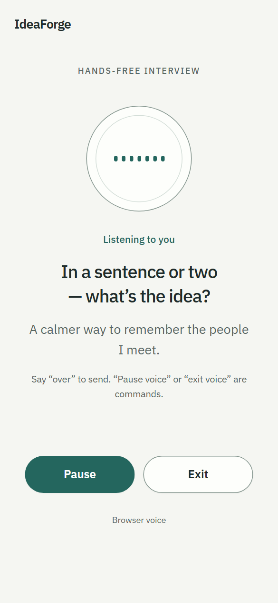

Voice, at your pace
One question. Then your answer.
Choose Start with voice for a focused conversation, or Type instead for the answer box and coverage details. Both use the same interview. Voice takes turns: IdeaForge speaks, then listens.

Read the voice stage
The voice stage opens in place, not on another route. It hides the answer box, suggestion chips, manual actions, coverage and unrelated navigation while it owns interaction. The question or current spoken caption, captured text, status and Pause/Exit controls remain available. Exit brings the manual controls back.
| State | What it means |
|---|---|
| Getting ready | Input or output is starting. Respond to a browser permission prompt if one appears. |
| Speaking | Wait for the question and examples to finish. The indicator is a state, not a measured waveform of the assistant’s voice. |
| Listening | Bars reflect measured microphone input. If levels are unavailable, the app says so; recognition can continue without a meter. |
| Processing | Transcription or model work is pending, not another opportunity to speak. Recorder-based input has no words to show until transcription returns. |
| Paused or needs attention | Automatic progression has stopped. Read the explanation, then tap Resume or Exit. |
A moving meter proves that samples arrived, not that the recogniser understood you. It stops outside listening; missing input is never replaced by an animated guess.
If recorded dictation loses its meter, recording can continue without silence detection. The app reports the remaining time limit; the segment still ends within its cap. Metering that is unavailable is not treated as proof of silence.
Pause, resume or return to text
Pause stops playback, releases the microphone and retains the captured draft without sending it. A recording already captured may need a moment to finish transcription; Resume stays unavailable while that settles. If the segment cannot be transcribed, the app reports it rather than inventing saved text.
A model request submitted before Pause may still finish for its originating idea. Pausing does not undo an answer already sent, and it does not start the next capture. Resume requires a deliberate tap; no hidden listener waits for a spoken resume command.
To send a retained draft after Resume, say just the finish word. Repeated misses will pause rather than skip a question that already has draft words. Choosing Dictation Off opens the typed interview, even if hands-free was remembered.
Exit leaves voice presentation, not the interview. It does not skip a question, delete work or request a write-up. Transcribed words remain in the manual draft; an unfinished audio segment cancelled on Exit is reported. If the write-up is already underway or complete, Exit shows the document view instead of reopening a finished question.
Moving the page into the background pauses voice. Return to the page and tap Resume when ready. The app requests a screen wake lock where available, but that is best-effort, not a promise of background or lock-screen conversation.
Choose the voice you hear
In Settings, Spoken replies defaults to the browser voice. The Voice and speaking pace section opens the voice list and preview. It shows the actual voices exposed by this device, with language and on device or network labels. These are the browser’s descriptions, not a quality ranking or a guarantee of offline use. Use Preview voice and Speaking pace to choose before starting. A saved voice that disappears falls back with an explanation.
OpenAI voice is a separate, optional, metered output path. It opens Voice and speaking pace automatically when selected under Spoken replies. It requires its own speech key: an inference or transcription key is never reused. Confirm that spoken text will go to OpenAI, usage is metered and the voice is AI-generated, then complete Check and preview OpenAI voice. Merely selecting it does not enable hosted requests during the interview.
The check must play successfully through the selected hosted backend; browser fallback cannot make it pass. Until it passes, replies use browser speech. A later hosted failure visibly falls back to the browser voice. If output still cannot play, voice stops with a recovery action rather than listening over silence.
Speech output does not supply a transcription service. Configure Dictation separately, and see Providers and Privacy and security for the text, audio and credential boundaries.
Install on Android
- Open IdeaForge in Chrome on the Android phone.
- If the setup screen offers Install IdeaForge, select it and accept the browser prompt.
- If no in-app install button appears, open Chrome’s menu and choose Install app or Add to Home screen.
- Launch IdeaForge from its home-screen icon.
Chrome’s browser recogniser is the preferred no-key dictation path when its behavioural probe succeeds. Android may end long recognition sessions even when continuous listening was requested, and it sends every growing guess at a sentence as a separate, already-final result. IdeaForge restarts the recogniser and folds growing guesses together rather than counting each as another sentence. Because they arrive marked final, hands-free mode waits a moment before trusting a trigger word or command in one.
Install on iPhone or iPad
- Open IdeaForge in Safari.
- Tap Share, then choose Add to Home Screen.
- Leave Open as Web App enabled if Safari offers it.
- Tap Add, then launch IdeaForge from the new icon.
What installation does offline
The service worker caches the application shell for a later launch. If the provider is unavailable, the interview can continue from the built-in question bank instead of failing to open. Provider requests are never placed in that cache, and a refined prompt still needs a working provider at wrap-up.
Offline launch is not offline voice. Browser recognition and network voices may need a connection; even an on-device voice label is not an end-to-end offline guarantee. Hosted transcription and OpenAI speech require their services to be reachable. Keep typing available when offline.
Back up the Ideas library before removing site data or moving devices. An installed icon does not turn local browser storage into cloud storage. See Ideas library for transfer and recovery.
Choose a provider a phone can reach
On a phone, localhost and 127.0.0.1 refer to that phone.
They do not reach Ollama or LM Studio running on a laptop elsewhere on the network.
IdeaForge also refuses arbitrary LAN addresses rather than opening a route that
would weaken its provider allowlist.
A hosted provider is therefore the normal phone setup. If you need a local model, follow the browser, CORS, and local-network constraints in Local models and Docker. Safari cannot make an insecure HTTP request from a hosted HTTPS page to a loopback model server; running the app locally as well is the practical route.
Voice paths and verification limits
| Environment | Browser recogniser | Hosted transcription | Hands-free |
|---|---|---|---|
| Android Chrome, tab or installed | Used when its probe succeeds; restart and growing-result handling have scripted regression coverage. | Requires microphone/recorder support, permission and a transcription key. | Requires usable input and output; physical behaviour remains untested. |
| iPhone or iPad in Safari | Offered only if the recogniser proves it is alive in that context. | Requires a transcription key, working recording and microphone permission. | Conditional on input and playback; physical behaviour remains untested. |
| Installed iPhone web app | Do not rely on it; the known silent recogniser is treated as unavailable. | Configure Groq Whisper or OpenAI; test a short recording in this context. | Do not infer working playback or capture from the installed icon. |
| Desktop Chrome, Edge or Firefox | The behavioural probe decides; an exposed recognition API is not enough. | Requires microphone recording and a key if browser recognition is unusable. | Requires working input and output; the stage reports a blocked path and offers Exit. |
| Any supported browser, keyboard only | Not used. | Not used. | Not available, but the full typed interview remains available. |
The app probes behaviour rather than trusting the presence of a speech API. It requires the recogniser to emit evidence that it started. Selecting Groq or OpenAI dictation explicitly uses recording and that transcriber instead; without a usable input path, the app reports the problem and keeps typing available.
Starting the recogniser is also what asks for the microphone, so the first interview on a device waits for that answer rather than timing the engine. Declining, or a microphone already blocked for the site, is reported as blocked and is not treated as a broken browser: allow it in your browser’s site settings and retry with Resume, or Exit to type. Only a recogniser that fails on its own account is remembered as unavailable.
Configure dictation
- Open Settings.
- Under Dictation, choose the browser recogniser, Groq Whisper, OpenAI, or keyboard only.
- If the transcription provider differs from the question provider, enter its key in the separate transcription field. When the same supported provider supplies both, IdeaForge reuses that provider key.
-
Choose an uncommon Hands-free finish word. The default is
over
; the app warns when a very short or common word is likely to cut an answer off. - Select Start with voice and allow microphone access when the browser asks.
Dictate one answer
- Select Answer out loud.
- Speak your answer. Live words appear when the browser recogniser supplies them.
- Select Stop listening when you are finished.
- Review and edit the transcript in the answer box.
- Select Send.
Use Exit first if the voice stage is open. Manual dictation does not submit its transcript automatically, so you can correct names or technical terms before sending. Finish that recording before switching to hands-free; the mode control stays disabled until its microphone is released. If the input is interrupted but transcription succeeds, the recovered words remain an unsent draft beside the error message. Dictated answers are marked in the exported transcript.
Run a hands-free interview
Start with voice from setup, or use the hands-free control in the manual interview when offered. The loop reads the bridge and question aloud, then the suggested answers as a separate utterance, listens, submits the completed answer and continues. The suggestions are examples of the shape of answer the question wants, not a menu to choose from: answer in your own words. A question with no suggestions is read on its own.
- Select Start with voice, or enable Hands-free in a manual interview.
- Wait until the question and examples have finished and the stage says it is listening.
- Say your answer naturally; a pause does not finish it.
- End the answer with the configured finish word, for example
over
. - Listen for the next question or a spoken wrap-up offer.
Spoken commands
| Say | Result |
|---|---|
repeat that |
Reads the current question again without recording an answer. |
skip this one |
Records the turn as skipped and moves to the next question. |
scratch that |
Discards the current, not-yet-submitted capture and listens again. |
wrap it up |
Finishes once the interview has enough recorded answers; very early requests are refused. |
pause voice |
Stops voice, retaining the draft. Resume needs a deliberate tap. |
exit voice |
Returns to the manual interview without skipping or requesting a write-up. |
Commands must be the whole utterance. A sentence such as
I’d skip this one if I could
remains an answer. The finish word is
terminal-only, so we went over budget
does not end a response unless the
configured word is actually at the end.
A command spoken over a reply is not heard. With hosted transcription, it is recognised only after the recorded segment is transcribed. Use the buttons when you need to interrupt immediately. Scratch cannot undo an answer already sent.
Spoken wrap-up
When coverage, exhaustion, or a turn limit suggests stopping, IdeaForge asks
whether it should write the idea up. Say a clear yes to wrap, or say
keep going
. Unclear replies are not treated as consent. After synthesis, the
app reads a successful refined prompt aloud in manageable chunks and leaves the
Markdown on screen. If synthesis fails, it says that the answers are saved and the
degraded document is available on screen.
Permissions and browser controls
| Permission or capability | Why it is needed | If unavailable |
|---|---|---|
| Microphone | Captures dictated answers for browser recognition or hosted transcription. | The stage reports the failure and offers recovery or Exit; typing remains available. |
| Speech output and playback | Reads questions, recovery prompts and the result, primed from Start, Resume or Preview. | Try Preview or another voice. If neither hosted nor browser output can play, voice stops explicitly; Exit to type. |
| Local-network access in Chrome | A hosted page may need browser approval before it can contact a loopback model server. | Use a hosted provider or run the app locally with the model server. |
| Local storage | Keeps sessions, encrypted credentials, and device preferences. | IdeaForge reports failed session saves; export before closing the tab. |
With recorder-based transcription, IdeaForge keeps the microphone stream for the active voice run after it is first opened, rather than reacquiring it for every answer. Pause, Exit, navigation and completion release owned microphone tracks; Resume may need to acquire them again. A level monitor never feeds its microphone signal to the speakers.
What hands-free does when it cannot hear you
- After the first empty capture, it prompts you to try again without repeating the whole question.
- After another miss, it reads the question again.
- After a further miss, it skips that question and continues rather than waiting for a tap.
- After repeated questions fail, voice stops explicitly with Resume and Exit available.
- A denied or unavailable microphone needs attention rather than endless retries.
- A recogniser that goes silent mid-answer settles with what it heard instead of hanging for ever.